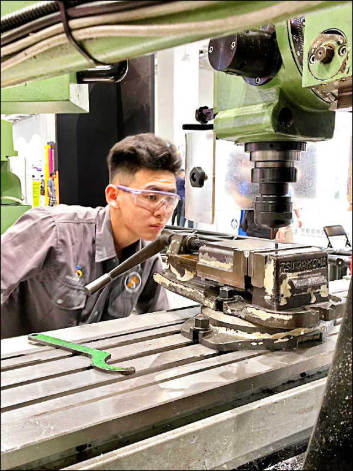

半導體
智慧加工
應用於 8 吋碳化矽之智慧化雙旋轉軸線切割系統
整合雙旋轉軸、感測監測與切割條件優化，驗證高硬脆材料加工之可行性與穩定性。
指導方向：晶圓切割、製程優化、智慧監測
成果亮點：設備整合與專題競賽展示潛力


培育智慧工具機 × AI 應用跨域人才，串接課程金字塔、PBL 實作、智慧實驗室與教材共享平台。
合作企業
基礎核心課程
特色領域模組
年度 PBL 課程
從課程金字塔、PBL 產學專題、智慧實驗室、數位教材到量化績效，以一頁式視覺快速掌握計畫價值。
以基礎核心、特色模組到 PBL 總整課程，建立跨域學習進程。
以企業真實問題出題，讓學生完成 AI、感測、CPS 與製造整合成果。
多軸加工、感測監控與數據分析場域，支撐實作與專題驗證。
課程錄影、操作示範、實驗手冊與簡報，強調可重複使用與跨校推廣。
修課人數、業師參與、產學合作與教材數量以圖卡與表格即時呈現。
點擊金字塔各層級查看詳細規劃
以企業實題、跨域整合與 PBL 實作為主軸，展示學生於智慧製造、AI、自動化與半導體應用之具體成果。
整合雙旋轉軸、智慧監測與切割參數優化，強化高硬脆材料加工穩定性與切割品質。
以感測資料分析與切割參數調校，提升加工穩定性與品質追溯能力。
結合視覺辨識、路徑巡檢與即時回傳，建立校園或工廠場域巡檢應用雛形。
從市場需求、產能資訊到人力技能盤點，建立跨部門視覺化決策與人才培育支援機制。

配備五軸同動機台與模擬器，落實實機加工技術訓練。

專注於 Python 數據分析、訊號處理與 AI 診斷開發。

建置 CPS 監控系統，實現加工狀態可視化管理。

勤毅誠樸．務實致用．深耕在地．接軌國際

典範科大
Leading Tech University
創立於民國 60 年，位處台中精密機械產業聚落核心（中部黃金縱谷）。本校秉持「勤、毅、誠、樸」校訓，致力於提供高品質的技術教育。
2021 年本校慶祝建校 50 週年，我們持續蟬聯教育部「典範科技大學」之譽，積極推動產學合作，將企業資源引入校園，縮短學用落差，為台灣精密製造產業培育無數頂尖人才。
致力於培育掌握機械產業理論與技術、敬業務實、具國際觀的高階人才。
主要聚焦於 精密機械、製造科技、應用材料與機電整合。結合熱流能源、自動控制等技術，強調理論與實作並重。
提供有限元素分析與測試設備，進行精密機械結構優化與模擬。
材料力學性質測試場域，支援金屬與複合材料特性鑑定。
配置 3D 逆向掃描與快速成型設備，強化數位設計實務。
專注於電機控制迴路設計、感測技術與 PLC 自動化應用。
培育專業工程素養，確保學生成就未來，無縫接軌產研機構。
跨域整合．實作導向．接軌國際
本計畫以「強化產學鏈結、培育未來關鍵人才」為核心，聚焦工具機產業數位轉型（DX）、綠色轉型（GX）與製造轉型（MX）三軸整合趨勢，透過課程模組、PBL 實作、教學實驗室與企業協作，培育具備跨域整合與實作能力的高階工程人才。
結合 11 家合作企業，導入業師協同授課、企業參訪、實習與專題指導，讓課程更貼近真實產線需求。
由機械基礎延伸到 AI、訊號處理、感測、虛實整合與智慧自動化製造，培育學生全局系統整合能力。
聚焦五軸加工、工具機精度量測、關鍵組件設計、感測與智慧監測，對接工具機產業升級需求。
透過模組課程、PBL 總整課程與特色教學實驗室，建立從基礎學習到成果落地的完整培育鏈。
DX × GX × MX
課程 × 實驗室 × 產學合作
580
修課人次
80
上課教材件數
70
數位/影音教材
4
PBL 總整課程
4
產學合作件數
30
業師參與人次
4
教學實驗室
60
競賽參與人次
產學攜手．跨域研發聯盟
計畫主持人
機械工程系 系主任
共同主持人
機械工程系 副主任兼助理教授
共同主持人
智慧自動化工程系 系主任兼副教授
鏈結工具機整機、關鍵零組件與金屬製程企業，建構教學、實習與專題合作網絡
邀請企業業師參與課程規劃、協同授課與專題指導，讓學生在課堂中直接接觸工具機產業真實題目。
透過設備觀摩、工廠參訪、企業實習與專題合作，把五軸加工、線切割、感測診斷與智慧生產管理導入學習歷程。
以專題成果展示、實習回饋、業師評分、競賽表現與就業媒合成效，持續檢視人才培育與落地成果。
全部以小圖呈現，點擊後才放大播放
切換到其他頁面後，再回到教學影片時，會自動恢復為小圖列表。
循序漸進．培育跨域技術能量
點擊金字塔各層級查看詳細規劃
整合軟硬體資源，打造智慧製造全方位培訓場域
支援五軸加工、加工參數驗證與工具機相關實作課程。
整合感測器、資料擷取與製程監測，對應感測器聯網與數據分析課程。
用於精度量測、誤差分析與影像辨識應用，支援特色模組與專題成果驗證。
結合本校創新研發大樓與機械系實作場域，支援工具機人才訓練、產學合作與專題實作。
整合多軸加工、量測與關鍵組件訓練空間，作為長期培育優秀專業人才與精進實務技術基地。
提供講義、簡報、實驗手冊、範例程式與授權說明，展現計畫可擴散性與跨校共享價值。
基礎核心課程與模組教材，適合作為授課與複習用教學資源。
各課程單元簡報、範例圖示與操作流程，便於教師課堂教學與成果推廣。
可作為跨校教學示範五軸加工、工具機量測、感測器聯網與 PBL 專題操作指引。
支援實驗與專題實作Python 範例、資料分析流程、影像辨識與感測資料處理腳本。
可重複使用教材本區以課程別分類，明確標示教材類型、適用對象與授權方式，利於校內外推廣使用。
建議在每份教材附上「適用課程、學習目標、操作需求與授權說明」，強化教學資源可擴散性，是審查重點加分項。
| 課程別 | 教材類型 | 內容示例 | 授權說明 |
|---|---|---|---|
| 基礎核心課程 | 講義 / 簡報 | AI、Python、感測基礎 | 限教學推廣使用，註明出處 |
| 特色模組 | 實驗手冊 / 示範影片 | 五軸加工、精度量測、組件設計 | 可供跨校課程交流與示範 |
| PBL 總整課程 | 專題成果包 / 程式碼 | 監控系統、刀具磨耗預測 | 需保留合作企業資訊與成果來源 |
讓人看到這不只是學術課程，而是與企業共同出題、共同指導、共同驗證的實作型計畫。
透過企業出題、業師指導、場域參訪、實習媒合與成果驗證，讓學生專題直接對接真實製造情境。
聚焦刀具磨耗、監控、量測、低碳與數位轉型議題
導入實務需求、協助專題修正與成果評估
串接學生與企業場域，強化就業與應用能力
以實驗室與企業場域進行參數驗證與展示
針對加工過程中刀具磨耗難以即時掌握的問題，導入感測與 AI 分析建立預警機制。
整合感測器聯網、資料分析與儀表板，支援設備狀態監測與製程異常偵測。
從加工參數、耗能與品質面向進行優化，支援企業低碳轉型與製造效率提升。
整合課程、實驗室與產業實題，展示學生從學習到落地的專題成果。
本頁已依計畫書方向整理為可上線之成果版面，可持續補入各年度 PBL 課程、企業實題專題、教學實驗室成果、競賽獲獎與教材展示；後續也可再串接 Supabase 後台擴充。
整合雙旋轉軸、感測監測與切割條件優化，驗證高硬脆材料加工之可行性與穩定性。
結合量測設備、誤差補償觀念與實測分析流程，建立工具機精度檢測與品質判讀之專題成果。
整合 Python、感測訊號與影像辨識流程，建立製程資料擷取、特徵判讀與異常辨識之應用成果。
從結構設計、材料選擇到裝配概念，發展工具機關鍵組件設計與功能驗證之專題成果。
以企業真實問題為題，整合基礎課程與特色模組成果，完成具展示性與應用性的 PBL 專題。
分析加工訊號、切削狀態與磨耗資訊，建立刀具壽命與加工品質預測模型。
Project Category
專題內容說明。
成果亮點說明。
量化指標達成狀況與課程開設總表
總修課人次
期中達成率 67%
業師參與
業界投入持續增加
產學合作
期中已達標 100%
教材產出
上課教材 24 + 數位教材 26
將修課、教材、業師與產學合作以圖卡化方式呈現，讓審查快速掌握期中成果與執行亮點。
| 類別 | 績效指標項目 | 原訂目標 | 實際達成 | 達成率 | 效益說明 |
|---|---|---|---|---|---|
| 1. 課程規劃 | 基礎/核心課程數 | 6 | 5 | 83% | 已完成 5 門基礎/核心課程開設，符合進度；與凱柏精機等龍頭企業合作 PBL 課程。 |
| 特色領域模組數 | 5 | 0 | 0% | ||
| PBL 總整課程數 | 2 | 1 | 50% | ||
| 產學合作件數 | 2 | 2 | 100% | ||
| 業師人次 | 30 | 18 | 60% | ||
| 2. 教材產出 | 上課教材件數 | 40 | 24 | 60% | 已產出 24 件上課教材與 26 件數位/影音教材，有效支撐線上線下混合教學。 |
| 數位/影音教材件數 | 35 | 26 | 74% | ||
| 3. 實驗室建置 | 使用比率 (時/週) | 6 | 9 | 150% | 每週平均使用達 9 小時，優於原訂目標；並已培育 8 位跨系種子助教。 |
| 種子助教培育人次 | 10 | 8 (男6 女2) | 80% | ||
| 4. 人才培育 | 總修課人次 | 300 | 200 (男:177 女:23) | 67% | 參與競賽人次 15 人，包含獲全國技能競賽金牌一名。 |
| 競賽參與人次 | 30 | 15 (男:12 女:3) | 50% | ||
| 種子師資培育人次 | 20 | 20 (男:10 女:10) | 100% |
| 屬性 | 課程名稱 | 授課教師 | 廠商 | 教材產出 |
|---|---|---|---|---|
| 基礎 | 五軸加工技術 (工具機導論) | 蘇怡甄 | 奧奔麥 | 上課4 / 數位6 |
| 核心 | 人工智慧概論 | 張簡才萬 | 無 | 上課4 / 數位2 |
| PBL | CPS 導向多軸加工監控與刀具預測 | 林岳鋒 | 凱柏精機 | 數位8 |
榮耀時刻與技術交流實錄
本頁以新聞牆與成果卡方式呈現學生競賽、專題發表、媒體報導與活動紀錄，提升計畫曝光度。

第54屆全國技能競賽 工業機械職類金牌

第48屆國際技能競賽 CNC車床國手

肯定學生在專業學習與實務能力上的卓越表現，強化企業、學校與學生之緊密互動，提升產學合作之深度與穩定性。